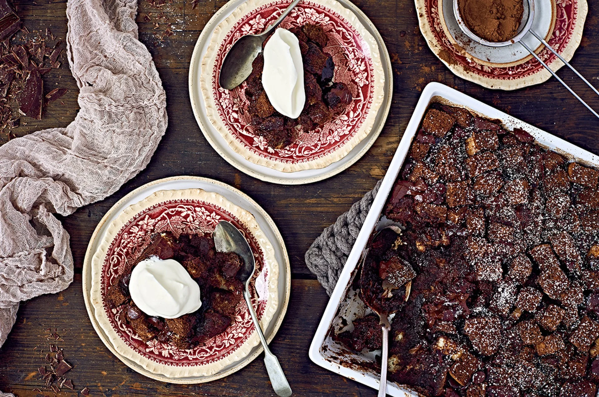

Dark Chocolate Bread Pudding
Home

Leftover bread has never looked so appealing!
Made from a custard base that has both cocoa and chopped chocolate, the final texture of this bread pudding is creamy and rich in chocolate flavor. The soaked bread cubes become cake-like when baked, surrounded by chunks of melty chocolate. This is comfort food at its finest.
Ingredients
- 6 1/2 cups (453g) bread cubes
- 1 1/2 cups (255g) semisweet chocolate, chopped, or chocolate chips, divided
- 1 cup (198g) granulated sugar
- 1/2 cup (43g) unsweetened cocoa, Dutch-process or natural
- 3 cups (680g) milk or half-and-half, divided
- 6 large eggs
- 1/2 teaspoon table salt
- 2 teaspoons vanilla extract
Steps
- Lightly butter the bottom and sides of a 2-quart baking dish, 9" x 13" pan, or equivalent.
- Toss the bread cubes with 1 cup (170g) of the chopped semisweet chocolate, and place in the prepared pan.
- Combine the remaining 1/2 cup (85g) chopped chocolate with the sugar, cocoa, and 1 1/2 cups (340g) of the milk or half & half in a saucepan set over low heat.
- Cook, stirring, until the chocolate is melted and the mixture is thickened and smooth.
- Transfer to a large bowl, and whisk in the remaining 1 1/2 cups (340g) milk or half & half. Whisk in the eggs, salt, and vanilla.
- Pour the mixture over the bread cubes and let rest for 30 minutes or so at room temperature, until the chocolate custard has been absorbed by the bread.
- Preheat the oven to 325°F.
- Bake the pudding for 45 to 50 minutes, until it's set. Remove from the oven and let cool for 10 minutes to allow the custard to fully set before serving.
- Serve warm with whipped cream, ice cream, or dusted with confectioners' sugar.
- Store, refrigerated, for up to 5 days.